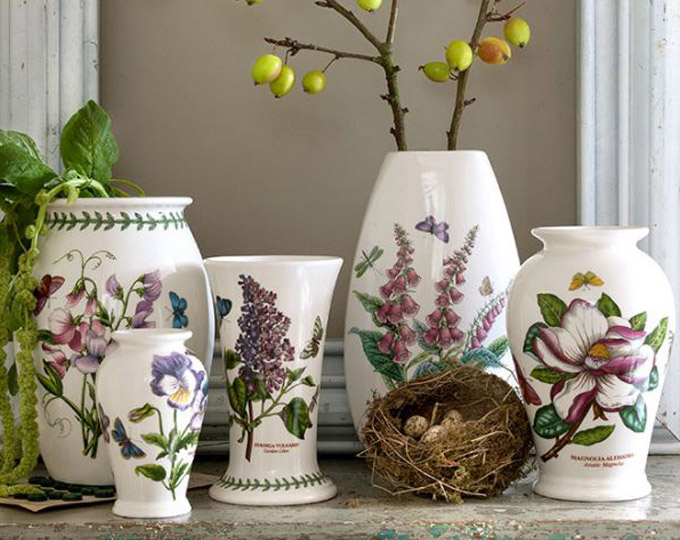

홈 > 브랜드 매거진 > 말보로
말보로
말보로(Marlboro)는 필립 모리스가 1924년 도입한 미국의 담배 브랜드이다.
산업 분야 식음료 · 공개 등급 편집 검수 · 브랜드 평가 4.7 ★


한눈에 보는 브랜드
말보로(Marlboro)는 1924년 처음 도입돼 초기에는 여성용으로 마케팅됐으나 1950년대 '말보로 맨' 카우보이 캠페인으로 남성 시장을 겨냥하며 세계 최대 담배 브랜드로 성장했다. 미국 내는 알트리아, 미국 외는 필립모리스 인터내셔널이 소유한다.
브랜드 관점
말보로 항목은 단순한 이름 목록이 아니라 식음료 시장 안에서 어떤 역할을 하는지 읽기 위한 기준점입니다. 제품·서비스 범위, 유통 방식, 시각 아이덴티티, 시장 포지션을 함께 비교하면 같은 산업의 다른 브랜드와 차이가 선명해집니다.
시작과 성장
필립 모리스가 1924년 미국에서 도입한 담배 브랜드로, 빨강·흰색 쉐브론 패키지와 '말보로 맨'으로 유명하다.
브랜드 아이덴티티
카우보이 이미지로 상징되는 세계 최대 담배 브랜드이다.
제품과 서비스
말보로의 제품과 서비스는 식음료 범주에서 해석됩니다. 이 섹션은 상품군, 서비스 방식, 판매 채널, 사용 장면을 분리해 추적하기 위한 기본 설명이며, 추가 자료가 확보되면 대표 제품과 가격대, 시장별 차이까지 확장할 수 있습니다.
현재 상태
타임라인
BI/CI 변천사
함께 읽을 브랜드
버거킹는 미국의 식음료 브랜드로, 맛, 메뉴 구성, 패키지, 매장 또는 유통 채널이 함께 브랜드 경험을 만드는 영역입니다.
 식음료 · 자료 기반Eataly
식음료 · 자료 기반EatalyEataly는 미국의 식음료 브랜드로, 맛, 메뉴 구성, 패키지, 매장 또는 유통 채널이 함께 브랜드 경험을 만드는 영역입니다.

식음료 · 자료 기반포트메리온포트메리온는 영국의 식음료 브랜드로, 맛, 메뉴 구성, 패키지, 매장 또는 유통 채널이 함께 브랜드 경험을 만드는 영역입니다.
 식음료 · 자료 기반5àsec
식음료 · 자료 기반5àsec5àsec는 프랑스의 식음료 브랜드로, 맛, 메뉴 구성, 패키지, 매장 또는 유통 채널이 함께 브랜드 경험을 만드는 영역입니다.
아베
아베;뉴
식음료 · 자료 기반아베;뉴아베;뉴는 식음료 브랜드로, 맛, 메뉴 구성, 패키지, 매장 또는 유통 채널이 함께 브랜드 경험을 만드는 영역입니다.
An
Angelika Köhlermann
식음료 · 자료 기반Angelika KöhlermannAngelika Köhlermann는 오스트리아의 식음료 브랜드로, 맛, 메뉴 구성, 패키지, 매장 또는 유통 채널이 함께 브랜드 경험을 만드는 영역입니다.
 식음료 · 자료 기반Berlitz Corporation
식음료 · 자료 기반Berlitz CorporationBerlitz Corporation는 독일의 식음료 브랜드로, 맛, 메뉴 구성, 패키지, 매장 또는 유통 채널이 함께 브랜드 경험을 만드는 영역입니다.
Be
Beryozka
식음료 · 자료 기반BeryozkaBeryozka는 러시아의 식음료 브랜드로, 맛, 메뉴 구성, 패키지, 매장 또는 유통 채널이 함께 브랜드 경험을 만드는 영역입니다.